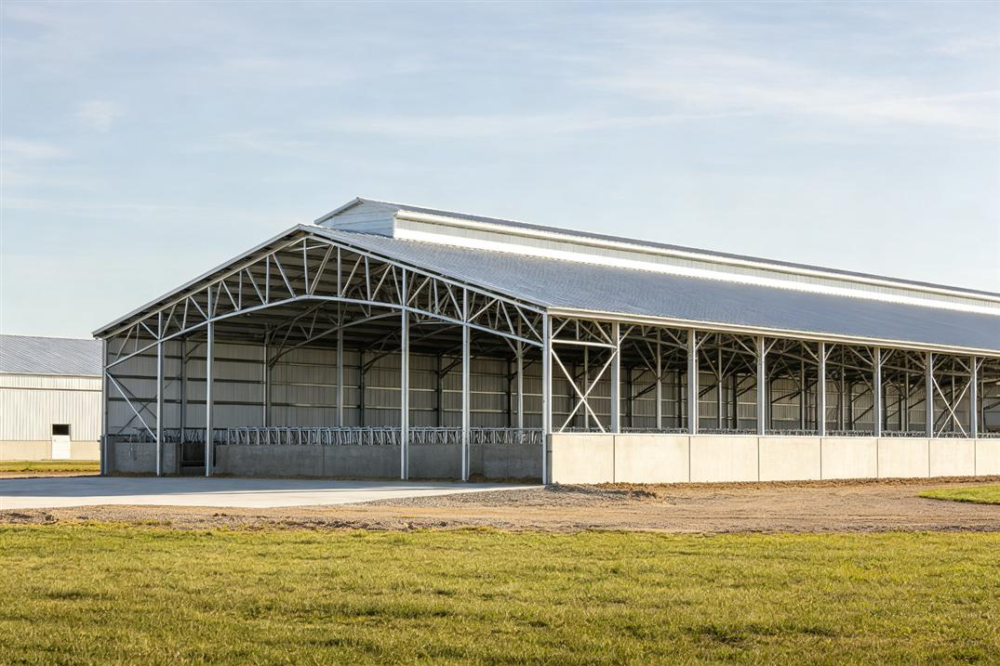

Dairy Farm Complex (Milking Parlor, Feed Storage, Cow Barn) — Nairobi, Kenya
Project Specifications
Project Overview
A complete dairy farm complex in Nairobi, Kenya, including a milking parlor, feed storage warehouse, and cow barn. The project featured ammonia-resistant anti-corrosion coatings, specialized ventilation systems for animal welfare, and natural lighting design. ZhongSai provided complete design, manufacturing, KEBS-compliant documentation, and export to Mombasa Port.
Production & Export
Installation Support
English installation drawings, KEBS documentation, agricultural-specific ventilation design guides, video tutorials, and engineer dispatch for complex dairy farm installation.
Frequently Asked Questions
What special design was needed for a dairy farm?
The cow barn required ammonia-resistant coatings (epoxy zinc-rich primer + polyurethane topcoat), natural ventilation with ridge vents and sidewall curtains, and non-slip flooring integration. The milking parlor had stainless steel wall cladding and wash-down compatible design.
Was KEBS certification required?
Kenya uses KEBS (Kenya Bureau of Standards) for product certification. For steel structures, the PVoC (Pre-Export Verification of Conformity) program was used. ZhongSai provided all test reports and documentation for the PVoC agent to issue the Certificate of Conformity.
How was the ventilation system designed?
The barn used a combination of ridge ventilation (continuous ridge vent along the full length), sidewall curtains (adjustable for temperature control), and exhaust fans in the milking parlor. The design was based on 60 air changes per hour for optimal cow comfort and ammonia control.
What about the high altitude in Nairobi?
Nairobi is at 1,795m elevation, which affects both wind loads (thinner atmosphere but higher wind speeds) and concrete curing. The steel structure design accounted for these factors, and we provided guidance on concrete mix design for high-altitude conditions.
Ready to Start Your Steel Structure Project?
Get a free, no-obligation quote within 24 hours. Our engineering team will design the optimal solution for you.